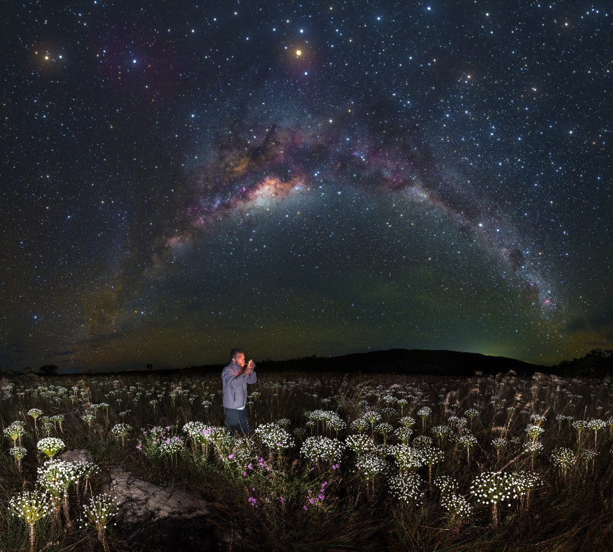

Best time to visit Chapada dos Veadeiros?

There isn't one “perfect month” for everyone — travellers who want huge waterfalls accept more rain; those after crystal pools & dry hiking often prefer the dry season. Use the table as your compass.
| Month | Profile | Summary |
|---|---|---|
| January 🌧️ | Rainy ★★★★ | Intense heat, daily rains. Rivers at full flow. Lush vegetation. |
| February 🌧️ | Rainy ★★★ | Heavy rain more frequent. Unpredictable weather. |
| March 🌦️ | Rainy ★★★★ | Rivers still full. Wet season begins to taper. |
| April 🌤️ | Transition ★★★★★ | Full rivers, light showers, sunsets with rainbows. |
| May ⭐ | Best month ★★★★★ | Ideal water levels, pleasant temperature, starry skies, low season. |
| June ☀️ | Dry season ★★★★★ | Dry winter, cool nights, steady sunshine. |
| July 🎉 | Peak season ★★★★ | Festivals and cultural events. Climate similar to June. |
| August 🔥 | Intense dry ★★★★ | Crystal pools; intense heat; some seasonal falls may be dry. |
| September 🔥 | Intense dry ★★★★ | Similar to August — watch for fire risk in the cerrado. |
| October 🌦️ | Transition ★★★★ | Early rains return; rivers begin to fill again. |
| November 🌧️ | Rainy ★★★★ | Frequent rains, vegetation rebounding. |
| December 🌧️ | Rainy ★★★★ | Firm wet season. Very full rivers for lookouts. |